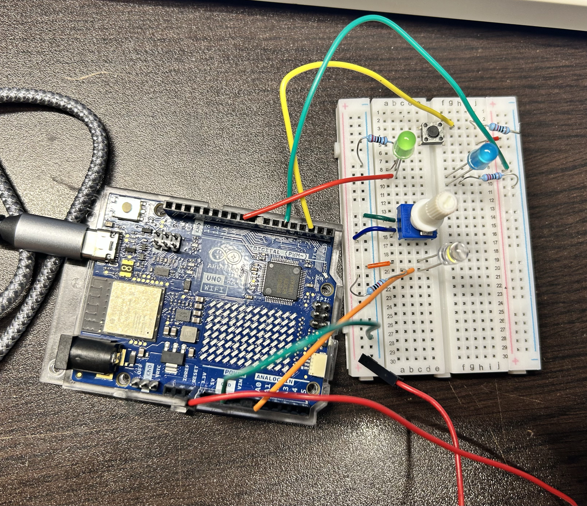
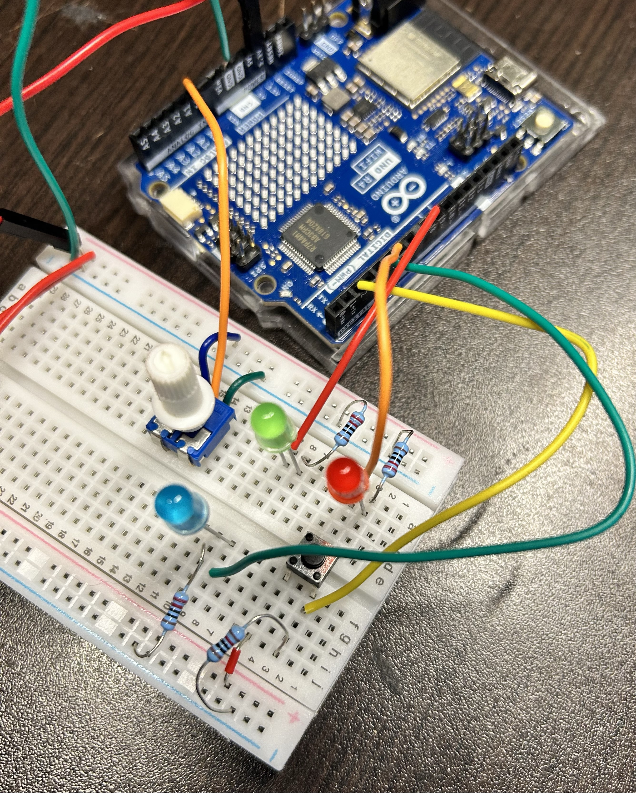
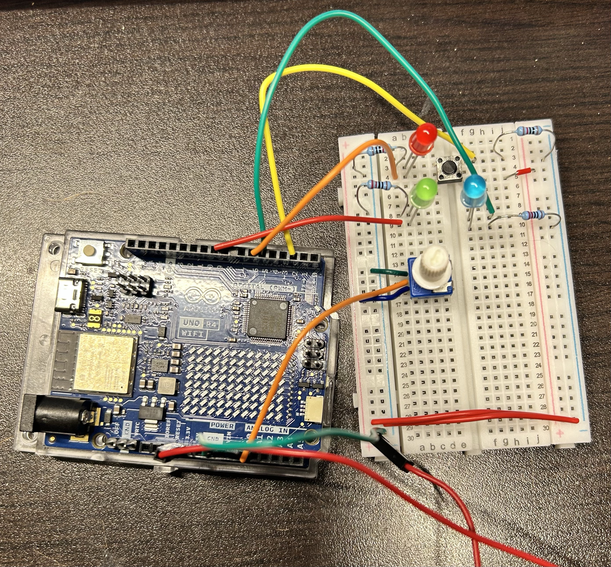
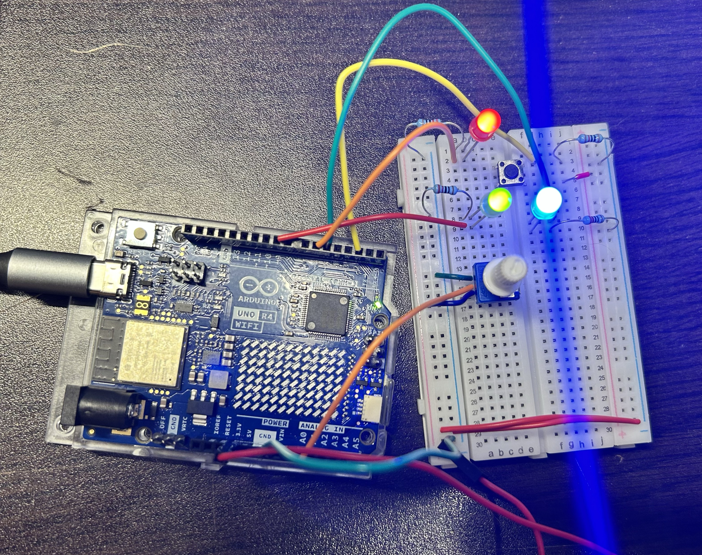
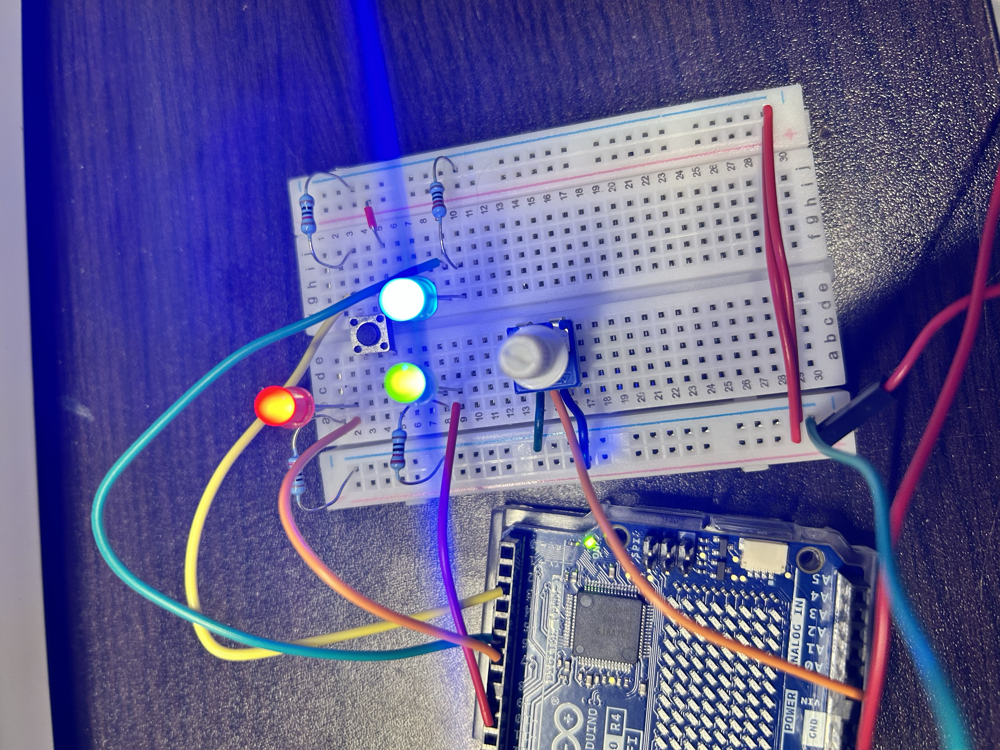
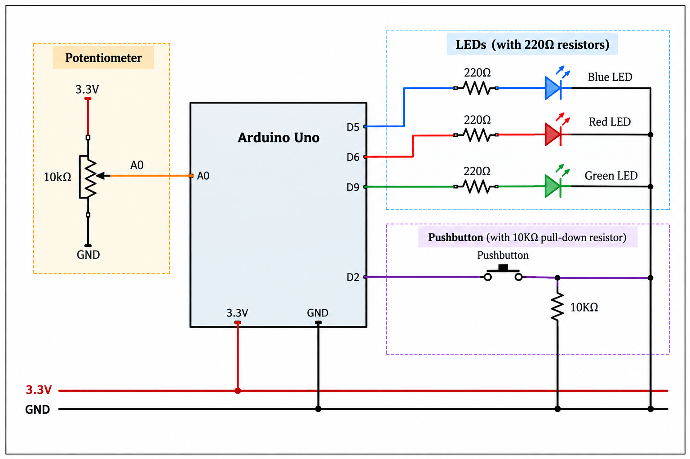

Power-Up Launch Control
Experience Goal
For my Blink Project, I wanted to create a small launch control panel that feels like the user is powering up a system before activating it. Rather than having each input control a separate LED, I wanted the potentiometer, pushbutton, and three LEDs to work together as parts of one interaction. The goal was to make the controls easy to understand while still giving the user a sense of progression and anticipation before the final launch.
How It Works
The Power-Up Launch Control uses two physical inputs: a potentiometer and a pushbutton. Turning the potentiometer increases the system's power through three levels. At low power, only the blue LED is lit. At medium power, the blue and green LEDs are lit. At maximum power, the blue, green, and red LEDs are all lit.
The pushbutton acts as the launch control. If it is pressed before the system reaches maximum power, all three LEDs quickly flash twice to indicate that the system is not ready. Once maximum power has been reached, pressing the button starts the launch sequence. The LEDs turn off and then illuminate one at a time before all three flash together three times. Each button press can trigger the launch sequence only once, so holding down the button does not cause the sequence to continuously repeat.
Building and Testing
I built the project gradually rather than wiring the entire system at once. I started with the potentiometer and green LED, which I had previously used to practice analog input and output. I then tested the pushbutton with the blue LED before adding a third red LED. Testing each component separately helped me confirm that the individual parts worked before combining them into the final interaction.
Once all three LEDs and both inputs were connected, I programmed the potentiometer values into three ranges to represent low, medium, and maximum power. I then added the button-controlled launch sequence. One improvement I made was tracking the previous state of the button so that holding it down would not repeatedly trigger the launch. Instead, the program recognizes a new button press and runs the sequence once.
Issues and Discoveries
The biggest issue I encountered happened after adding the red LED. During testing, the red LED worked normally until I held down the pushbutton, at which point it unexpectedly turned off. The problem turned out to be the physical placement of the components on the breadboard. The red LED and its resistor were using row 3, which was also being used by one leg of the pushbutton. Because holes A through E in the same numbered row are electrically connected, the two parts of the circuit were unintentionally interacting with each other.
I fixed the problem by moving the red LED circuit to rows 1 and 2 so that it no longer shared a connected row with the pushbutton. After rewiring it, the red LED behaved correctly during the entire launch sequence. This was a useful reminder that the physical layout of a breadboard matters just as much as the code. A circuit can contain the correct components and connections in theory but still behave unexpectedly if two components accidentally share a connected row.
Process & Result
I documented the project throughout the building and testing process. The photos below show the circuit as it developed from the initial setup to the completed version with the potentiometer, pushbutton, and three LEDs. The final video demonstrates the complete interaction, including the different power levels, the "not ready" feedback, and the successful launch sequence.
Starting Point
I began with the circuit I had built during earlier Arduino exercises. This gave me a starting point for combining the potentiometer and pushbutton into a larger interaction.

Building the Circuit
As I developed the project, I added the three LEDs and connected them with the potentiometer and pushbutton. At this stage, the physical circuit was assembled, but I still needed to write and test the code that would turn the individual components into one complete interaction.


Final Circuit
After testing and troubleshooting the circuit, I reached the final layout shown below. The potentiometer controls the three power levels, while the pushbutton either gives a "not ready" response or activates the launch sequence depending on the current power level.


Final Demonstration
The video below shows the completed Power-Up Launch Control in action. It demonstrates the three power levels, the "not ready" response when the button is pressed too early, and the full launch sequence once maximum power is reached.
Power-Up Launch Control — Final Demonstration
Created and recorded by Elizabeth Godec, 2026.
Circuit Diagram
The diagram below shows the final circuit used for the Power-Up Launch Control, including the potentiometer, pushbutton, and three LEDs connected to the Arduino.

Code
The Arduino code reads the potentiometer to determine the current power level and monitors the pushbutton for a new press. The potentiometer's analog range is divided into three sections for low, medium, and maximum power. The program also stores the button's previous state so that holding the button down does not repeatedly trigger the launch sequence.
// input controls
const int knobPin = A0;
const int buttonPin = 2;
// remembers the previous button state so holding the button doesn't continuously trigger the launch sequence
int lastButtonState = LOW;
// LED output pins (blue, red, green)
const int blueLedPin = 5;
const int redLedPin = 6;
const int greenLedPin = 9;
void setup() {
//setting button as an input
pinMode(buttonPin, INPUT);
//setting the 3 LEDs as outputs
pinMode(blueLedPin, OUTPUT);
pinMode(redLedPin, OUTPUT);
pinMode(greenLedPin, OUTPUT);
}
void loop() {
int knobValue = analogRead(knobPin);
int buttonState = digitalRead(buttonPin);
//if button was pressed and power is at max then begin launch
if (buttonState == HIGH && lastButtonState == LOW && knobValue >= 682) {
//turn everything off briefly to begin countdown
digitalWrite(blueLedPin, LOW);
digitalWrite(greenLedPin, LOW);
digitalWrite(redLedPin, LOW);
delay(300);
digitalWrite(blueLedPin, HIGH);
delay(300);
digitalWrite(greenLedPin, HIGH);
delay(300);
digitalWrite(redLedPin, HIGH);
delay(300);
//flash all 3 LEDs three times to signal successful launch
for (int i = 0; i < 3; i++) {
digitalWrite(blueLedPin, LOW);
digitalWrite(greenLedPin, LOW);
digitalWrite(redLedPin, LOW);
delay(150);
digitalWrite(blueLedPin, HIGH);
digitalWrite(greenLedPin, HIGH);
digitalWrite(redLedPin, HIGH);
delay(150);
}
}
//uf button was just pressed before max power then flash all LEDs twice to signal "not ready"
else if (buttonState == HIGH && lastButtonState == LOW) {
for (int i = 0; i < 2; i++) {
digitalWrite(blueLedPin, LOW);
digitalWrite(greenLedPin, LOW);
digitalWrite(redLedPin, LOW);
delay(150);
digitalWrite(blueLedPin, HIGH);
digitalWrite(greenLedPin, HIGH);
digitalWrite(redLedPin, HIGH);
delay(150);
}
}
//low power blue LED only
else if (knobValue < 341) {
digitalWrite(blueLedPin, HIGH);
digitalWrite(redLedPin, LOW);
digitalWrite(greenLedPin, LOW);
} else if (knobValue < 682) { //medium power blue + green
digitalWrite(blueLedPin, HIGH);
digitalWrite(redLedPin, LOW);
digitalWrite(greenLedPin, HIGH);
} else { // max power all LEDs
digitalWrite(blueLedPin, HIGH);
digitalWrite(redLedPin, HIGH);
digitalWrite(greenLedPin, HIGH);
}
//saving current button state for comparison during next loop
lastButtonState = buttonState;
}Technical References
This project built on the Arduino input and output techniques introduced through class exercises and examples. In particular, I used analog input from a potentiometer, digital input from a pushbutton, digital output to LEDs, and button state tracking while developing the final interaction.